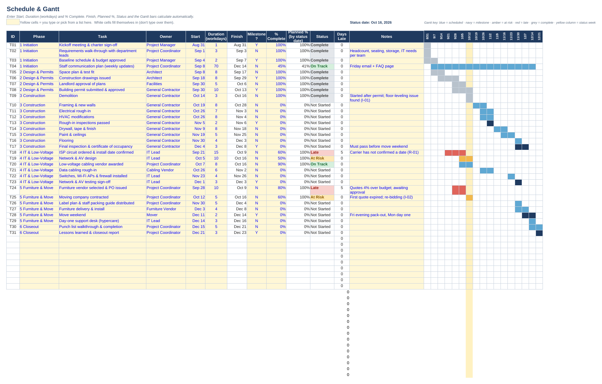
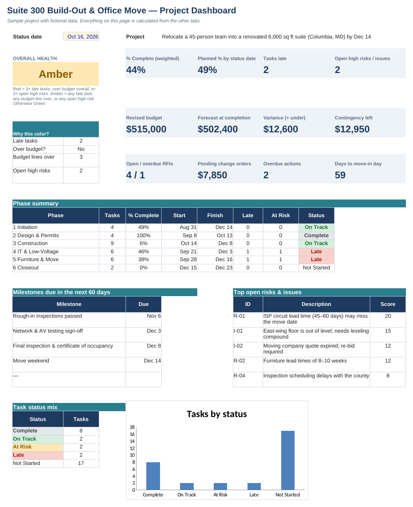
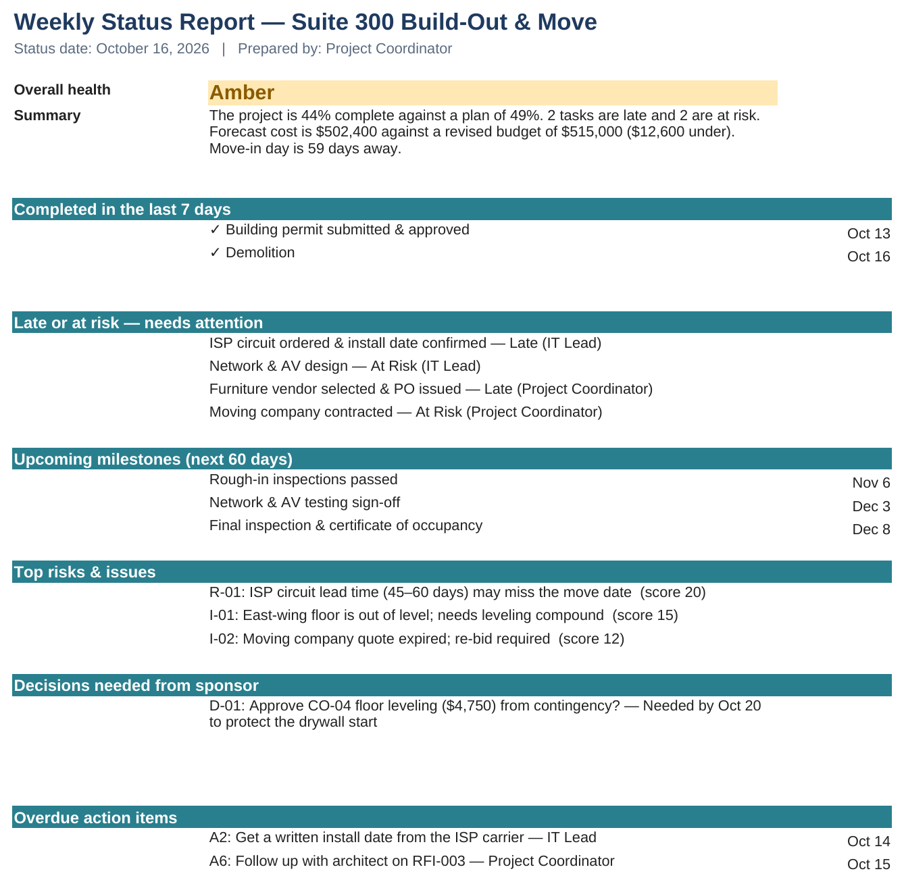
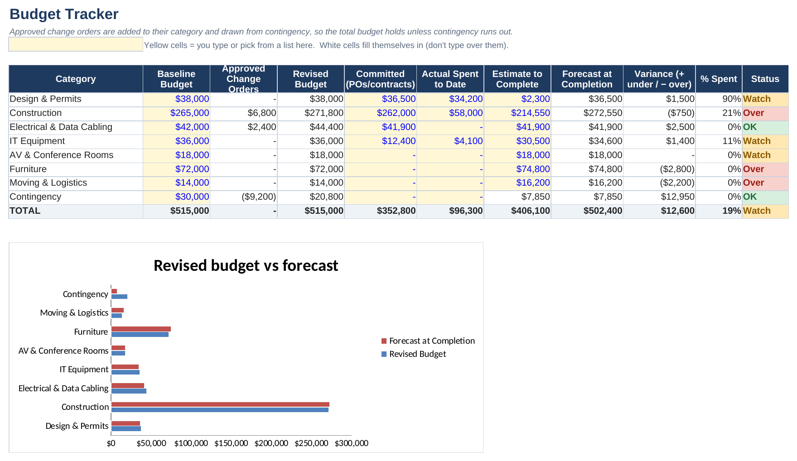

Office Build-Out & Move: Project Control Workbook
Renovating a 6,000 sq ft suite and moving a 45-person team
One workbook that runs a sample office renovation and move from start to finish, plus the everyday paperwork a coordinator writes along the way: charter, meeting minutes, a change request, follow-up emails and a weekly status report.
01The problem
A renovation has a lot of moving parts: an architect, a contractor, IT, furniture, movers. Something is always late, someone always has a question, and money keeps getting asked for. A coordinator's job is to keep one true picture of all of it and tell the boss what needs attention.
When that picture lives in five separate lists, the Friday status email is out of date before it's sent.
02What I built
- Schedule with a Gantt chart: 31 tasks in 6 phases. The bars color themselves by status.
- Budget with change orders (requests for extra money). Approved ones come out of the contingency cushion.
- RFI & submittal log (questions to the architect, product approvals), a RAID log (risks, assumptions, issues and decisions) and meeting action items.
- A dashboard and a weekly status report that write themselves from the numbers.
- A 6-page document pack: project charter, meeting minutes, change request, follow-up email, status email and closeout checklist.
03How it works
- One status date drives everything. Change it, and every task re-checks itself for that day.
- A task is At Risk when it's more than 15 points behind where it should be, and Late when it's past its finish date and not done.
- The project color follows written rules. A small "Why this color?" box on the dashboard shows exactly which rule is being hit.
04How I built it
I started from the end result, the Friday status report, and worked backward to what has to be tracked to write it. I wrote each rule in plain English first ("what counts as late?") and then turned it into a formula.
I can do this math in my head for one task. But with 31 tasks, 8 budget lines and 4 logs, it's easy to miss something, so I'd rather have it built in and the same every time.
05Where it comes from
At MetroStar I tracked required training for staff, followed up on anything outstanding, and kept the records current in Excel and SharePoint. This is the same follow-through, applied to a whole project. I set it in construction and facilities because a lot of coordinator jobs around Baltimore and Columbia ask for RFIs, submittals and change orders by name.
06What I'd do next
Move the logs into a shared tool (SharePoint, Smartsheet or Microsoft Project) so the whole team can update them, and add a check for people booked on two tasks at once.
Try it yourself: Open the workbook, go to the Dashboard and change the status date (yellow cell) to Nov 20, 2026. Nothing else gets updated, so 11 tasks turn Late and the project goes Red.



